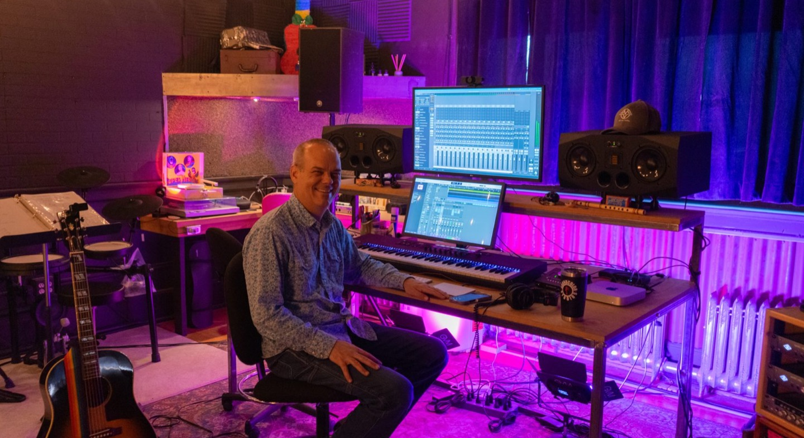
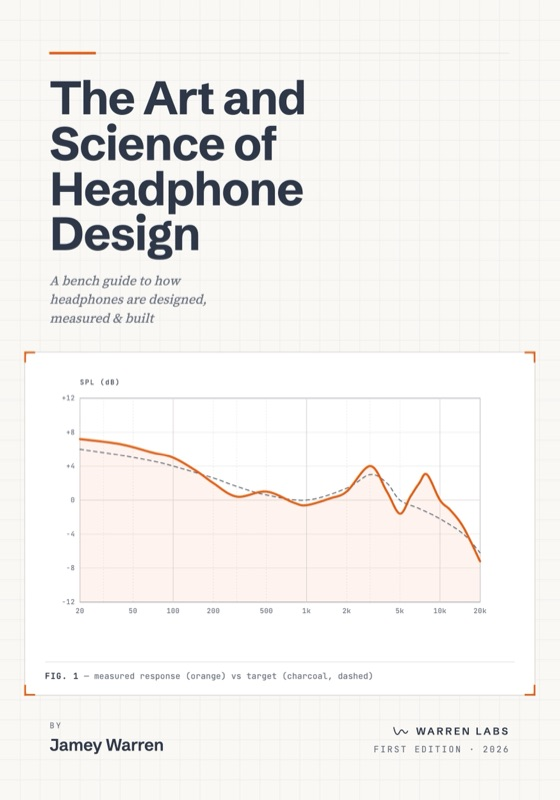

I'm Jamey. Twenty-five years in audio: soldering benches at Grace Design, running HeadRoom as CEO, and lately building a line of plugins solo from a desk in Montana — headphones, amps, converters, and the software that drives them. I take on a few projects and partnerships a year, when the product is worth building and the people are worth building with.
Every product runs the same chain, idea to shelf. Pull me in for one stage or the whole path.
What's actually worth building: the real problem, the honest market, the thing only you can pull off.
Settling the feature set and holding the line. The best calls are usually the things left out.
Who actually buys it and why, what it costs, and the story that lands it in the right hands.
Prototype to production — hardware and software, sketch to shelf, including the places it tends to go sideways.
Level is shipping; the rest of the line is in open beta — free to download while the DSP, the interface, and the go-to-market come together, mostly solo.
Four more products, four different product calls: a label, a platform, a manual, an app. Click any unit for the detail.

I got my start at Grace Design and went on to run HeadRoom as president and CEO. Over 25 years I've shepherded audio hardware from prototype into production, built software, produced records, and stayed close to the music the whole time.
The work sits between the engineering and the music — knowing enough about both to push a product toward something people can feel. That's been the job for a long time, whatever the title on the door happened to be.

I wrote The Art and Science of Headphone Design, a bench manual on how headphones actually work, from driver physics to measurement and tuning. The full reference is free and open at makerphones.com. There's also a print and Kindle edition for anyone who wants it on the bench.
Production, testing, repair, prototyping, and the automated measurement system the gear was tested against. Two founders and me, to twenty people and gear in studios worldwide.
Relaunched the entire headphone-amplifier line: every model from concept through prototype into production.
An independent line of audio tools and an open headphone field manual. Running the whole product chain myself, in the open, so you can see exactly how I work.
Tell me what you're working on, and I'll let you know honestly whether I'm the right fit.